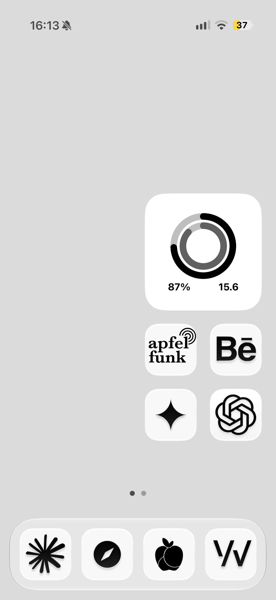
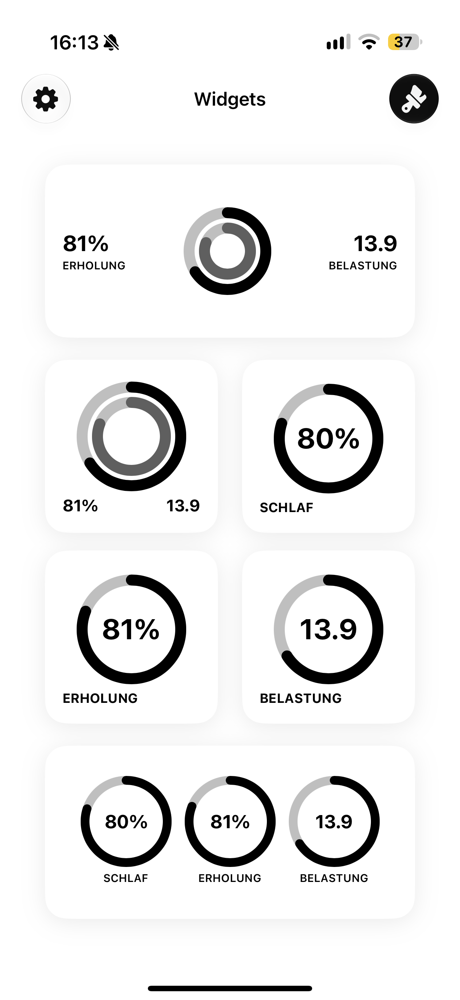
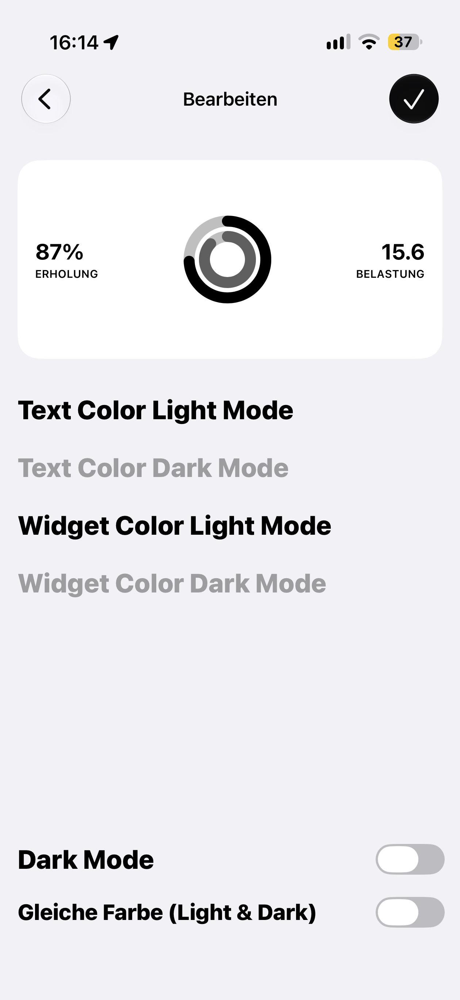
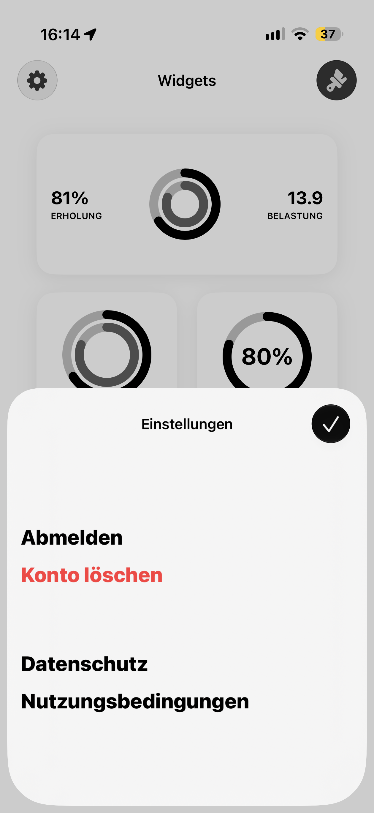
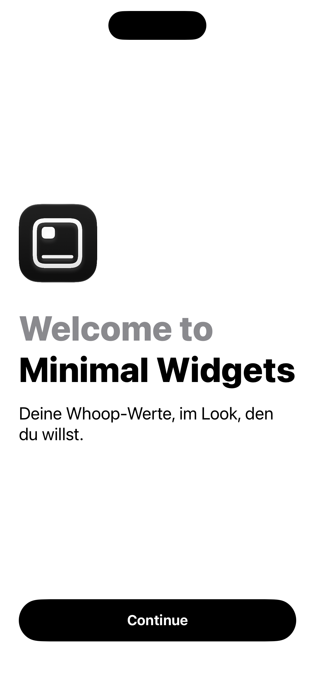

A minimalist iOS app that connects to WHOOP and displays Recovery, Strain, and Sleep data in fully customizable home screen widgets — including custom light/dark colors and a shared single-color mode.




